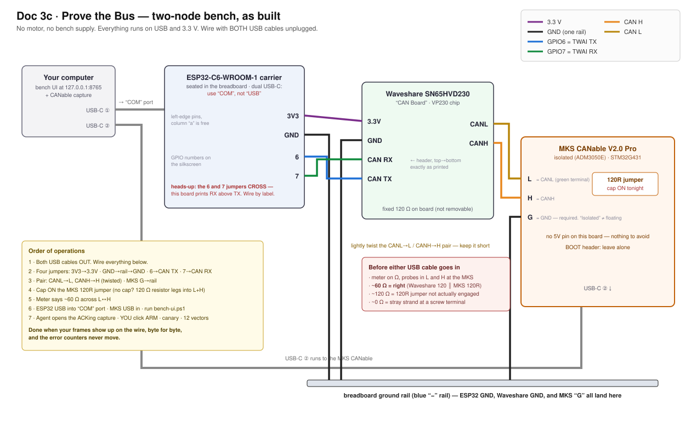

Doc 3c · Prove the Bus — Two Nodes, No Motor¶
Engineered Lighting prototype series · July 2026
Between Doc 3 stage 2 (the board talks) and stage 3 (the motor joins) there is an optional session that buys a disproportionate amount of certainty: wire the transceiver and the USB-CAN adapter (BoM #10) into a two-node bus and watch your own command frames arrive on the wire. No motor, no bench supply — the transceiver runs on the ESP32's 3.3 V, the adapter on USB.
What it proves, all at once: the TWAI driver config, the 1 Mbit/s bit timing, the transceiver, the CAN wiring, and the exact bytes leaving the board. What that's worth: when a motor doesn't answer at stage 4, the debugging ladder starts with half its rungs already checked.
Skipped BoM #10? Skip this chapter — it stays optional, and stage 4's ladder still works. It's just longer.
Why a listener is required, not nice-to-have¶
CAN transmitters demand an audience. Every frame must be acknowledged by at least one other node in the same instant it's sent; a transmitter alone on the bus reads back silence, counts it as an error, and retries — the error counters climb until the controller takes itself off the bus, and this chip doesn't come back without a power cycle. That's also why the bench firmware boots SAFE and transmits nothing until armed: an armed board with no listener isn't dangerous, but it is self-wedging.
The adapter, with its channel open in normal mode, is that audience. It acknowledges every frame it hears — which is precisely what makes arming safe in this session.
Two nodes means the terminator rule flips
Doc 3a's sniffer rules — tap mid-span, terminator OFF — describe the stage-4-and-later bus, where the motor is one physical end. Today there is no motor: the transceiver and the adapter are the two ends, so the adapter's terminator goes ON. The Waveshare transceiver board carries a fixed onboard 120 Ω; the adapter's makes two; the meter reads ~60 Ω.
It flips back OFF the moment the motor joins. The tell if you forget: the stage-3 bus reads ~40 Ω instead of 60 — three terminators.
Wire it¶
Hands-on stage — no agent lane; the level-3 wiring photo check applies.

As-built diagram for this bench's exact boards. Yours may differ — which is what step 1 below exists to catch. Note the 6/7 jumpers cross: the Waveshare header prints RX above TX, so wiring by position instead of by label swaps the pair.
"Power off" here means: ESP32 USB cable out, adapter USB cable out. There's no supply in this session at all.
- Photograph two things and get them checked (level 3): the adapter's screw-terminal silkscreen, and your dev board's pin labels — both sides. Neither pin order is documented anywhere except the board in your hand — this is doubly true if either is a third-party variant, and per Doc 3a, "CANable 2.0 Pro" boards usually are. Don't wire until the map is confirmed.
- Set the adapter's terminator ON — switch or jumper, per its silkscreen. If it turns out to be a solder pad: don't solder. Take a 120 Ω resistor (BoM #4), bend the legs, and clamp one leg into the CANH screw terminal and the other into CANL alongside the bus wires in step 4 — termination with zero soldering.
- Seat the transceiver on the breadboard so each header pin gets its own five-hole row.
Four jumpers, straight through — CAN is not UART, nothing crosses: ESP32
3V3→3V3, ESP32GND→ ground rail →GND,GPIO6→CTX,GPIO7→CRX. - The pair: two ~25 cm wires, stripped 5 mm, lightly twisted around each other (about a
turn every 2 cm). Transceiver
CANH→ adapterCANH;CANL→CANL. Screw terminals: loosen, bare copper only under the screw, tighten, tug. One more wire: adapterGND→ the breadboard ground rail — isolated does not mean floating. A 5V pin, if present, stays empty; it's an output. - Measure before power. Multimeter on Ω, probes on CANH and CANL at the adapter's terminals, everything still unplugged: ~60 Ω.
Done when: 60 Ω cold, the adapter's ground is on the rail, and the photos came back clean. If stuck: ~120 Ω = step 2's terminator isn't actually engaged. Open = a screw terminal clamped insulation instead of copper. ~0 Ω = a stray strand bridging the pair at a terminal — unscrew, re-strip, redo.
Validate it¶
🤖 Give this to your agent
You're my bench agent for the Engineered Lighting gimbal build
(chapter: engineering.engineered.lighting/03c-prove-the-bus/). The
two-node bench bus is wired and measures 60 ohms cold: ESP32-C6 +
SN65HVD230 on one end, a USB-CAN adapter (terminator ON) on the other.
No motor exists yet. Start by proposing a plan and wait for my approval
before executing anything. Then: identify the adapter's firmware
(serial device = slcan; USB device with no serial port = candleLight/
gs_usb), open a capture in NORMAL mode - never listen-only, the whole
point is that you ACK my frames - at 1 Mbit/s, and confirm the channel
is open. Tell me when to arm; ARMING IS MY CLICK, NOT YOURS. Then send
ONE canary command and read the firmware's error counters: the frame
must appear in your capture AND tx_err must read 0. Only then replay
the full test-vector set, including the deliberate out-of-range values
that prove the firmware clamps on the wire. If counters climb at the
canary: tell me to disarm, reopen your channel non-listen-only, and
have me power-cycle the ESP32 - a no-ACK frame keeps retrying even
after disarm, and reboot is the only clear.
Done when: every vector appears on the wire byte-identical with the
right CAN id, and the counters stay at zero.
Report back: the capture, the counter readings, and any vector that
differed.
Do it by hand — understand what the agent did
- Plug the adapter in and look before installing anything: a new COM port (Windows) or
/dev/cu.usb*node (Mac) means slcan firmware; a USB device with no serial port means candleLight. Doc 3a has the software for both. - Open the capture at 1 Mbit/s in normal mode. In Cangaroo that's the default — just don't tick "listen only."
- Plug the ESP32 in, open the Serial Monitor (115200, "New Line"), and type
arm— the bench sketch from stage 4 boots safe and transmits nothing until you say so. - Type
a10. The capture shows id0x141, dataA4 00 1E 00 E8 03 00 00— the same bytes the serial log printed. Typestatus: every error counter reads 0. - Try
a200. The wire shows 170.00° — the firmware clamped it before encoding. That's the soft limit doing its job where you can see it.
Before you power up¶
- Both photos confirmed against the wiring above
- Adapter terminator ON (or the 120 Ω resistor clamped across its terminals)
- Transceiver wired straight through — 3V3, GND,
GPIO6→CTX,GPIO7→CRX - Twisted pair to the adapter; adapter GND on the ground rail; 5V pin empty
- CANH↔CANL reads ~60 Ω, everything unplugged
- Capture open in normal mode before anyone arms
Done when: your frames appear on the wire byte-for-byte, out-of-range commands arrive clamped, and the error counters never move.
Then head back to Doc 3 stage 3 and wire the
motor — remembering the adapter's terminator flips OFF as it moves to a mid-span tap
(Doc 3a shows where). When stage 4's first
r gets no reply, you'll know which half of the world to suspect: not yours.
And when the motor answers reads happily but goes mute the moment you command a move — that is its undervoltage latch, not your wiring. Check the rail is at 24 V and power-cycle; stage 4's ladder has the full tree.